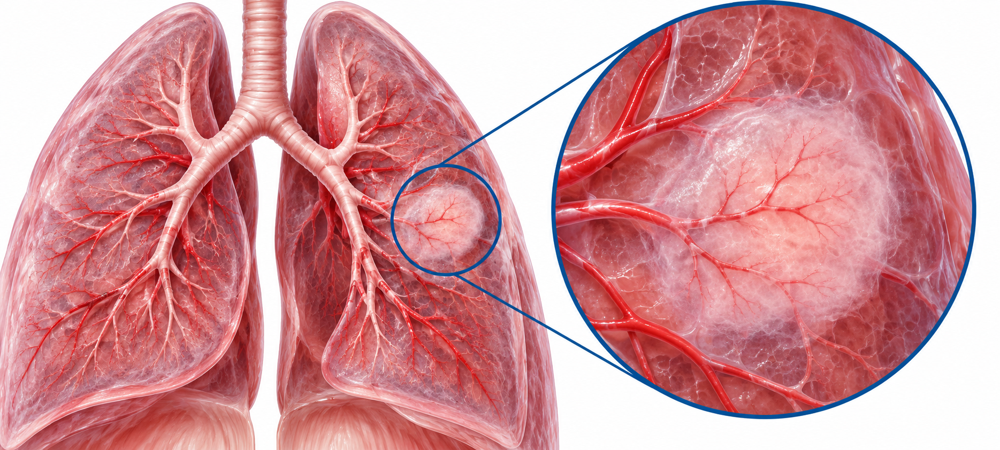

폐결절 추적의 두 경로
검진 분류와 결절별 추적
폐결절 추적의 두 경로 — 검진 Lung-RADS와 우연 발견 결절
최창민 · 강의 내용으로 배우는 임상 지견

ASL-064 · 강의 학습
출발점에 따라 추적의 언어가 다르다
검진 LDCT의 범주와 별도로 발견된 결절의 형태·크기 경로
검진 LDCT → Lung-RADS
검진 보고서에서 범주·결절 성상·크기·발견 시기·증가를 확인한다. 강의가 제시한 Lung-RADS Version 1.0의 범주별 추적 간격과 추가 검사 계획을 읽는다.
우연 발견 → 결절별 추적
이전 영상을 비교하고 solid·part-solid·pure GGN을 구분한다. 강의의 별도 폐결절 추적 알고리즘에서 고형 성분·전체 크기·소실·증가에 따라 추적 또는 의뢰한다.
ASL-064 · 강의 학습
공통 진입: 이전 영상 → 성상 → 측정 → 변화
가장 의심되는 결절을 기준으로 범주를 결정한다
01 · 이전 CT 확보
최근 5년 이내 CT를 가져와 비교한다.
02 · 성상 구분
고형결절·부분고형결절·순수 간유리결절.
03 · 크기 측정
Lung window, 장축·단축 직경 평균. mm 단위 정수 보고.
04 · 발견 시기·증가
첫 발견·새 발생·기존 결절을 나누고 >1.5 mm 증가 여부 확인.
여러 범주가 공존하면 높은 범주를 채택한다. 크기 변화와 성상 변화는 후속 계획을 바꾸는 단서다.
ASL-064 · 강의 학습
Solid · part-solid · pure GGN을 구분
전체 크기와 고형 성분의 크기는 서로 다른 측정이다
Solid
전체가 고형으로 보이는 결절. 양성 원인도 있어 성상·크기·변화를 함께 본다.
Part-solid
간유리 음영 안에 고형 성분이 존재. 전체 직경과 내부 고형 성분 직경을 각각 본다.

Pure GGN
전체가 간유리 음영. 장기간 변화와 소실 여부, 고형 성분의 출현을 살핀다.
강의는 AAH·AIS에서 MIA·선암으로 연결되는 스펙트럼을 소개하며, part-solid부터 적극적인 평가를 설명했다.
ASL-064 · 강의 학습
양성 가능성을 높이는 CT 소견도 읽는다
형태는 추적의 맥락이며 조직 진단과 동일한 확정은 아니다
 석회화
석회화중심성·전체 석회화, 동심원형·층판형, 팝콘 모양은 오래된 병변·육아종·과오종 가능성과 연결.
열구 주위 열구 사이의 결절은 폐내 림프절 가능성. 열구를 침범하는 소견은 더 적극적인 평가를 설명했다.
주변 위성 결절 말초 결절과 satellite nodules는 결핵·감염 가능성을 함께 검토하고 변화 양상을 추적.
지방·혈관 결절 내부 지방은 hamartoma 단서. Feeding vessel이 보이면 pulmonary AVM 가능성을 설명했다.
연자는 양성으로 보이는 소견에서 3개월 또는 6개월 CT 뒤 안정적이면 정기 검진으로 관찰하는 접근을 설명했다.
ASL-064 · 강의 학습
검진 경로: 범주별 결과와 다음 일정
교재의 폐암검진 결과 판정기준
| 범주 | 판정 의미 | 추적·평가 |
|---|
| 1 | 이상 소견 없음·확실한 양성 | 12개월 후 연례 폐암검진 CT |
|---|
| 2 | 폐암 가능성이 낮은 양성 결절 | 1년 후 정기검사 |
|---|
| 3 | 양성으로 추정되는 경계성 결절 | 6개월 후 추적검사 |
|---|
| 4A | 폐암 의심 | 3개월 후 추적검사 |
|---|
| 4B / 4X | 폐암 가능성이 매우 높음 | 추가 검사·상급병원 평가 |
|---|
| S | 폐결절 외 의미 있는 소견 | 관련 검사 또는 진료 |
|---|
검진 양성 판정과 병리학적 악성 확정은 같은 뜻이 아니다.
ASL-064 · 강의 학습
Lung-RADS v1.0: 기저 LDCT의 크기 기준
교재에 실린 기준표의 baseline 열
| 범주 | Solid | Part-solid | GGN |
|---|
| 2 | <6 mm | 전체 직경 <6 mm | <20 mm |
|---|
| 3 | ≥6~<8 mm | 전체 ≥6 mm, 고형 <6 mm | ≥20 mm |
|---|
| 4A | ≥8~<15 mm | 전체 ≥6 mm, 고형 ≥6~<8 mm | — |
|---|
| 4B | ≥15 mm | 고형 성분 ≥8 mm | — |
|---|
교재는 4A에 기관지내 결절, 4X에 암 의심 추가 영상 소견을 가진 범주 3·4 결절을 포함한다.
ASL-064 · 강의 학습
Lung-RADS v1.0: 새 결절·성장 결절
교재 기준표의 follow-up LDCT 열을 별도로 읽는다
| 범주 | 추적 검사에서의 기준 |
|---|
| 2 | 새 solid <4 mm; 새 GGN <20 mm; ≥20 mm GGN 안정 또는 느린 성장 |
|---|
| 2 | 범주 3·4 결절이 ≥3개월 변화 없음. 2b: 확실한 양성 소견을 가진 범주 3·4 결절 |
|---|
| 3 | 새 solid ≥4~<6 mm; 새 part-solid 전체 <6 mm; 새 GGN ≥20 mm |
|---|
| 4A | 성장 solid <8 mm 또는 새 solid ≥6~<8 mm |
|---|
| 4A | 전체 ≥6 mm part-solid에서 새로 생기거나 성장한 고형 성분 <4 mm |
|---|
| 4B | 새로 생기거나 성장한 solid ≥8 mm 또는 고형 성분 ≥4 mm |
|---|
교재 표의 위험 표기: 범주 1·2 <1%, 범주 3 1~2%, 범주 4A 5~15%, 범주 4B >15%.
ASL-064 · 강의 학습
검진 범주를 의뢰 계획으로 연결
이상 표시 자체보다 범주·크기·변화가 핵심
01 · 범주 1·2
정기 검진 경로로 연결. 범주 1은 12개월 연례 CT.
02 · 범주 3
교재의 6개월 추적 계획을 확인하고 변화를 비교.
03 · 범주 4A
교재의 3개월 추적. 증가나 성상 변화에 따라 추가 평가.
04 · 범주 4B·4X
강하게 의심되는 결절은 상급병원으로 의뢰하여 검사·치료를 평가.
최종 암 진단은 추적 변화와 조직검사 등을 통해 이루어진다는 연자의 설명을 함께 전달한다.
ASL-064 · 강의 학습
우연 발견 solid: 8 mm를 중심으로 추적
강의의 별도 solid nodule 도식
01 · Solid nodule
결절 성상·기존 영상·크기를 먼저 확인.
02 · <8 mm
안정 시 6개월 → 12개월 → 12개월 → 12개월 추적 후 ARC.
03 · ≥8 mm
안정 시 3개월 → 6개월 → 12개월 → 12개월 → 12개월 후 ARC. 교재에는 Lung-RADS 4A로 병기.
04 · 추적 중 변화
성장·성상 변화면 생검 ± PET/CT와 수술 평가로 연결.
교재의 변화 기준: Growing >1.5 mm 또는 성상 변화. 결절 특성에 따라 개별 접근이 필요하다는 주석을 함께 둔다.
ASL-064 · 강의 학습
우연 발견 part-solid: 고형 성분을 기준으로
강의 도식의 출발은 3개월 추적이다
01 · Part-solid
3개월 추적 후 고형 성분의 크기를 평가.
02 · 고형 성분 <8 mm
6개월·12개월·12개월·12개월 추적 후 ARC.
03 · 고형 성분 ≥8 mm
수술적 절제 또는 생검 평가. 도식은 수술 선호로 주석.
04 · 추적 중 변화
>1.5 mm 성장 또는 고형 성분 2 mm 변화 시 절제·생검 경로로 이동.
Lung-RADS 분류표의 전체 직경 기준과 이 도식의 고형 성분 기준을 섞지 않는다.
ASL-064 · 강의 학습
우연 발견 pure GGN: 소실과 15 mm 분기
강의 도식: 3개월 후 지속 여부부터 평가
01 · 3개월 추적
처음 보인 순수 간유리결절의 소실 여부 확인.
02 · 소실
Discharge 경로. 발화에서는 이후 검진으로 연결.
03 · 지속·<15 mm
6개월·12개월·12개월·12개월 뒤 ARC.
04 · ≥15 mm 또는 변화
수술적 절제 또는 생검 평가. >1.5 mm 성장·고형 성분 변화도 평가 경로.
Pure GGN의 15 mm 분기는 강의의 결절별 추적 도식이다. Lung-RADS v1.0 GGN 분류의 20 mm 기준과 다른 축이다.
ASL-064 · 강의 학습
두 경로를 다시 연결하면: 숫자의 대상이 보인다
크기 숫자만 떼어 외우지 않고 무엇을 재는지 함께 확인
검진 분류의 숫자
Lung-RADS v1.0은 baseline/new/growing 및 solid·전체 part-solid·고형 성분·GGN을 각각 나눈다. 범주 3은 6개월, 4A는 3개월이라는 결과 계획을 확인한다.
결절별 도식의 숫자
Solid <8/≥8 mm, part-solid의 고형 성분 <8/≥8 mm, pure GGN <15/≥15 mm가 중심이다. 소실·성장·새 고형 성분에 따라 추적 또는 의뢰로 이동한다.
강의 말미는 8~15 mm part-solid 의뢰, solid는 한 번 추적 후 의뢰, ≥15 mm는 조직검사·수술 평가로 요약했다.
ASL-064 · 강의 학습
AI 표시 → 원영상 확인 → 이전 영상 비교
AI 검출 표시가 곧 폐암 진단이나 즉시 의뢰는 아니다
01 · AI 검출
결절 수·크기·범주·이전 검사 자동 매칭 정보를 확인.
02 · 원 CT 열람
혈관·림프절이 결절 또는 암처럼 표시될 수 있어 원영상을 확인.
03 · 과거와 비교
새 발생·증가·감소·소실을 과거 사진과 함께 판단.
04 · 계획 선택
의심도에 맞는 추적 또는 의뢰. 작은 결절 모두를 바로 의뢰하는 접근은 피하라는 설명.
CXR AI는 폐암 검진 CT를 대체하지 않는다. 이상 표시가 있으면 CT로 실제 병변을 확인하는 설명이다.
ASL-064 · 강의 학습
의뢰 문턱: 결절 성상과 변화가 결정한다
강의의 의뢰 메시지를 형태별로 정리
Solid 8~15 mm는 한 번 추적 후 증가·변화를 확인하고 의뢰. 15 mm 이상은 조직검사·수술 등 평가를 의뢰.
Part-solid 침윤성 병변 가능성을 강조하며 상급병원 평가를 설명. 고형 성분 크기와 증가를 함께 전달한다.
Pure GGN 3개월 후 소실 여부와 15 mm 분기를 활용. 지속·성장 또는 고형 성분 출현을 관찰.
동반 소견 기관지·혈관이 보이지 않는 mass, 커진 종격동 림프절은 조직검사 평가 의뢰로 연결했다.
ASL-064 · 연자 Q&A
연자 Q&A: 양성 판정과 추적의 의미
Q&A 95–96쪽
양성 결절의 1년 추적
CT만으로 양성·악성을 최종 확정하기보다 성상·크기와 추적 변화를 보고 조직검사 등으로 암을 진단한다고 답했다. 양성으로 보이는 결절도 크기에 따라 추적한다.
흉부 X선과 검진
CXR은 결절을 놓칠 수 있어 폐암 검진에 쓰지 않고 고위험군 LDCT를 사용한다고 답했다. 석회화 결절은 보통 양성으로 판단하며 폐암 가족력의 CT 평가도 언급했다.
연자 Q&A — CXR 정상이나 AI 표시에 의존해 CT의 결절 추적 경로를 대신하지 않는다.
ASL-064 · 연자 Q&A
연자 Q&A: ILA·ILD와 AI 제품 질문
결절 외 동반 영상 소견은 다른 의뢰 맥락을 가진다
ILA·ILD
ILA는 검진 주기 또는 1년 CT로 관찰, 바로 전원이 필요한 것은 아니라고 답했다. ILD에서 증상이 있거나 감별이 필요하면 전문 진료, 호흡곤란·폐기능 저하는 빠른 진료를 권했다.
AI 제품
학회 차원의 검증 제품을 묻는 질문에 연자는 당시 신의료기술 통과와 학회 차원 검증을 구분해 답했다. AI 결과는 원영상·이전 영상·범주를 확인하는 보조 정보로 읽는다.
연자 Q&A — 로봇수술은 편의성과 회복 장점이지만 재발을 줄이는 방식으로 설명하지 않았고, 재발은 병기에 의해 결정된다고 답했다.
ASL-064 · 강의 학습
분류 → 추적 → 변화 → 의뢰
검진과 우연 발견의 출발점은 달라도 원영상 비교는 공통이다

검진 보고서Lung-RADS 범주와 해당 일정·추가 검사 계획을 확인한다.

별도 결절 추적성상·전체 직경·고형 성분 크기와 소실·증가를 기록한다.
의뢰 정보이전 영상, 측정값, 성상 변화, AI 표시를 실제 CT와 대조한 내용을 전달한다.